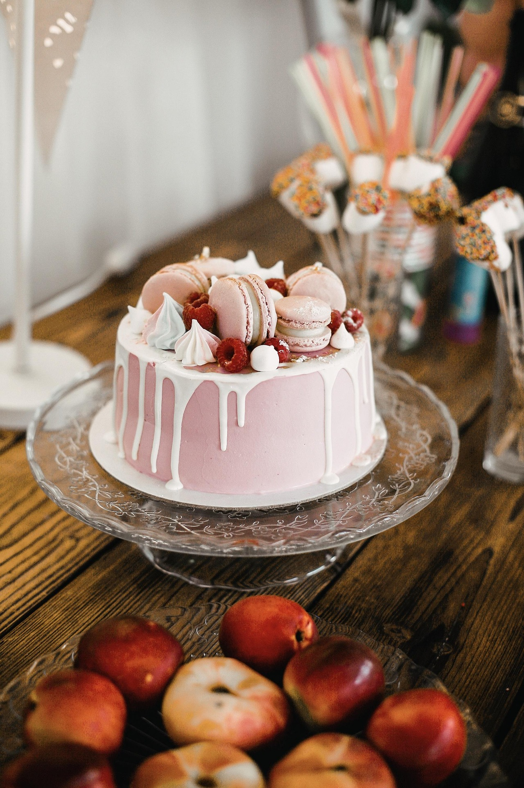
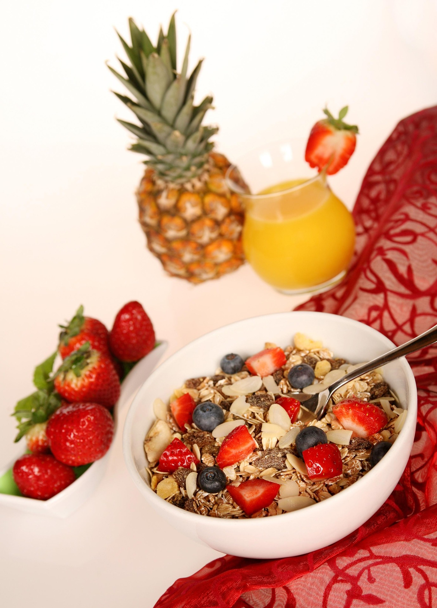
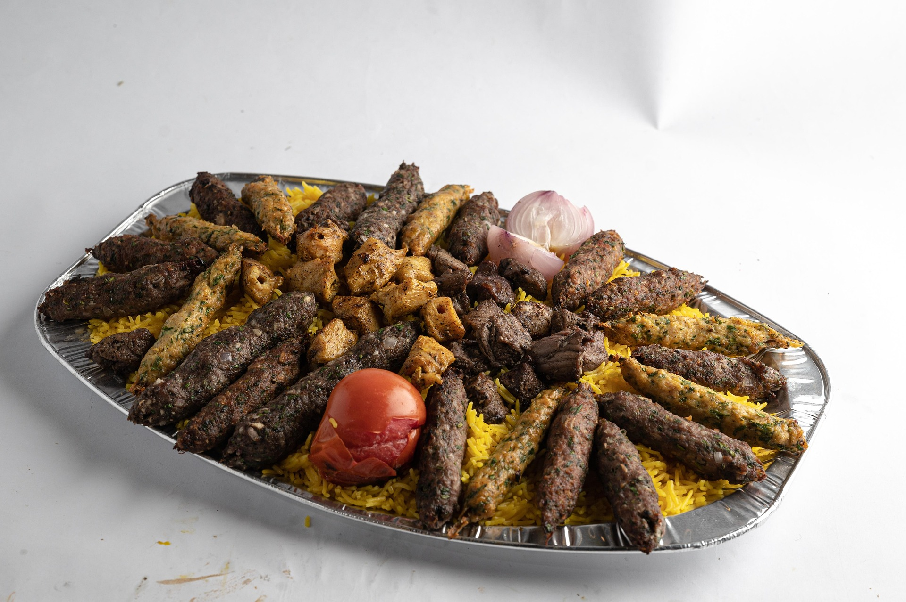
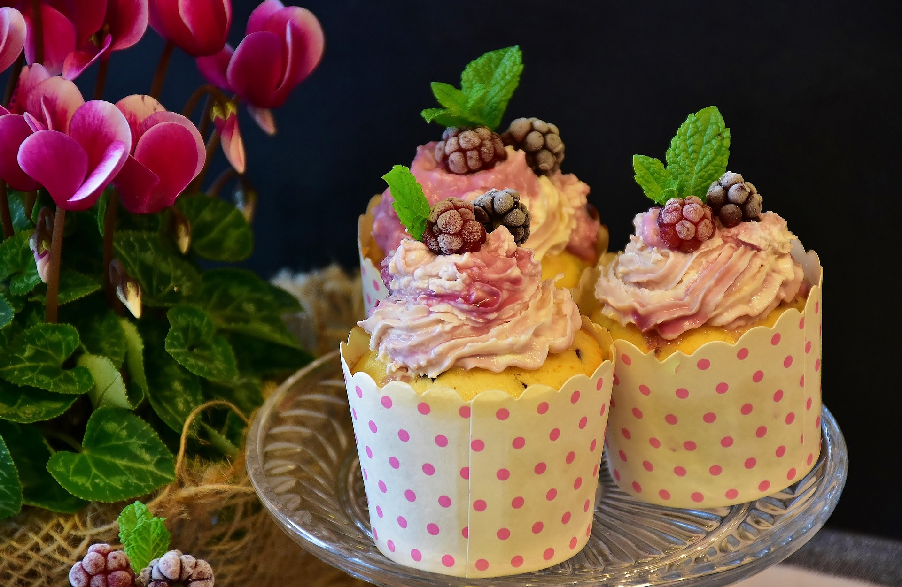
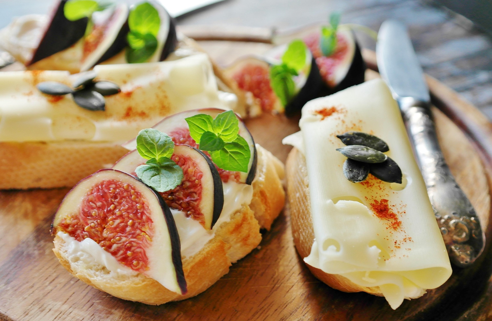
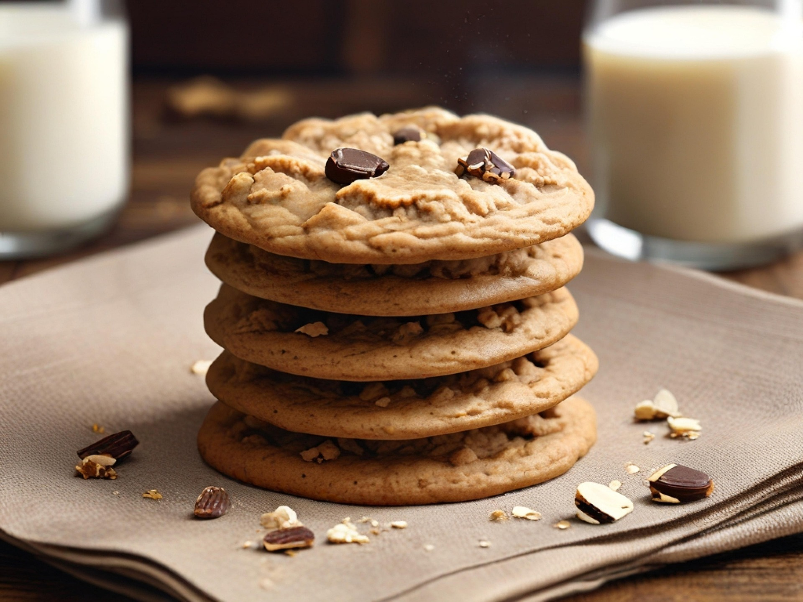
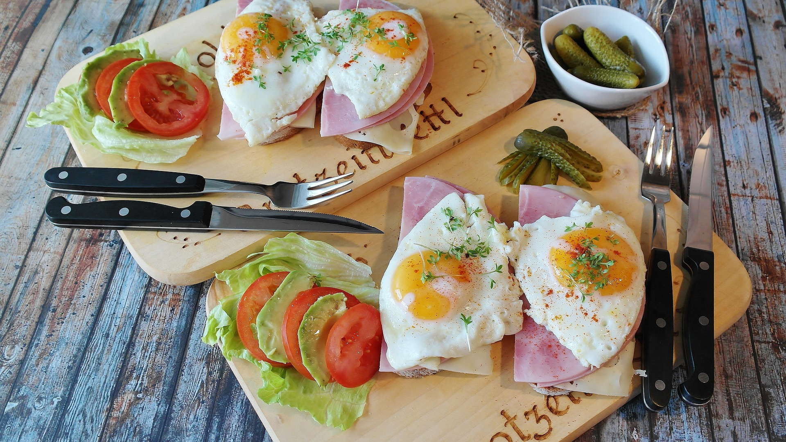

Explore exquisite homemade recipes, craft your signature dishes effortlessly, and share your culinary passion with food enthusiasts worldwide.

Sweet & creamy delight

Packed with oats, fruits & nuts

Juicy grilled meats & savory spices

Crispy & lightly salted
Healthy & refreshing greens

Topped with sweet berries

Served with maple syrup & berries

Freshly baked & golden brown

Served with roasted veggies

Packed with superfoods

Melt-in-your-mouth goodness

Fresh herbs & olive oil
Sweet & creamy delight
A magnificent showstopper dessert featuring delicate layers of moist sponge cake, rich strawberry buttercream, and decorated with crisp French macarons on top.
Prepare vanilla sponge batter, divide into pans, and bake until springy.
Whip butter, powdered sugar, and strawberry extract until fluffy.
Layer sponge cakes with buttercream and strawberry slices.
Cover the entire cake smoothly with pink frosting.
Arrange gourmet pink macarons neatly on top.
Refrigerate for 30 minutes before serving.
7 ingredients
Ensure ingredients are at room temperature for smooth batter.
Ideal for celebrations and birthdays.
Packed with oats, fruits & nuts
A nutritious, energy-boosting breakfast bowl combining raw rolled oats, crunchy nuts, seeds, and fresh seasonal fruits soaked in yogurt or milk.
Add raw rolled oats into a clean breakfast bowl.
Mix in chia seeds, chopped almonds, and walnuts.
Pour cold milk or Greek yogurt over the mixture.
Arrange sliced bananas and fresh berries on top.
Drizzle raw organic honey over the fruits.
Mix together and enjoy immediately.
6 ingredients
Let oats soak for 5 minutes before eating to soften texture.
A quick, nutrient-dense breakfast.
Juicy grilled meats & savory spices
An aromatic platter of tender, perfectly seasoned grilled meats marinated in Middle Eastern spices, served with charred vegetables and flatbread.
Mix olive oil, garlic, lemon juice, and spices in a bowl.
Cubed meat is coated and rested for 30 minutes.
Thread meat tightly onto skewers.
Cook on a hot charcoal grill until charred and tender.
Char onion halves and tomatoes on the side.
Arrange over warm flatbread with parsley.
8 ingredients
Don't over-marinate with lemon juice for too long.
Best served hot with garlic sauce.
Crispy & lightly salted
Crispy on the outside, fluffy on the inside. These golden potato batons are fried to absolute perfection and sprinkled with sea salt.
Peel potatoes and cut into uniform sticks.
Submerge in cold water for 20 minutes to remove starch.
Pat completely dry with paper towels.
Fry in medium oil until soft, then drain.
Fry in high heat until golden and crispy.
Toss with sea salt and serve hot.
4 ingredients
Double frying is the secret to ultimate crunchiness.
The ultimate comfort snack.
Healthy & refreshing greens
A refreshing blend of crisp garden greens, juicy cherry tomatoes, cucumbers, and tangy vinaigrette dressing.
Rinse lettuce and greens thoroughly.
Slice cucumbers and halve cherry tomatoes.
Whisk olive oil, lemon juice, salt, and pepper.
Combine veggies in a large bowl.
Drizzle vinaigrette over just before serving.
Enjoy fresh and crisp.
6 ingredients
Add dressing right before serving to keep greens crisp.
Light and healthy appetizer.
Topped with sweet berries
A rich and creamy baked cheesecake with a buttery graham cracker crust, topped with a luscious sweet berry compote.
Mix crushed cookies with melted butter and press into pan.
Beat cream cheese, sugar, eggs, and vanilla until smooth.
Pour over crust and bake until set.
Chill in the refrigerator for at least 4 hours.
Simmer mixed berries with sugar until syrupy.
Top cheesecake with berry compote and slice.
6 ingredients
Chill thoroughly before slicing for clean edges.
A showstopping dessert.
Whisk flour, baking powder, sugar, and salt.
Mix milk, egg, and melted butter in another bowl.
Fold wet ingredients into dry until just combined.
Pour batter onto a hot greased griddle.
Flip when bubbles form and cook until golden brown.
Top with maple syrup and butter.
6 ingredients
Do not overmix the batter to keep pancakes extra fluffy.
Classic weekend breakfast.
Freshly baked & golden brown
Traditional crusty artisan bread with a chewy interior, bubbly crumb, and a beautifully crisp golden crust.
Combine flour, warm water, yeast, and salt.
Let rise for 4 hours until bubbly.
Shape into a round loaf on a floured surface.
Score the top with a sharp razor blade.
Bake in a preheated Dutch oven for a crispy crust.
Let cool completely before slicing.
4 ingredients
Baking in a covered Dutch oven traps steam for the best crust.
Freshly baked homemade bread.
Served with roasted veggies
Juicy chicken breasts marinated in fresh herbs, garlic, and olive oil, grilled to smoky perfection.
Mix olive oil, rosemary, garlic, and lemon juice.
Coat chicken breasts and let marinate.
Heat grill pan over medium-high heat.
Grill chicken for 6-8 minutes per side.
Let meat rest for 5 minutes before slicing.
Serve with roasted vegetables.
6 ingredients
Letting the chicken rest keeps all the delicious juices inside.
Healthy protein meal.
Packed with superfoods
A wholesome, nutrient-dense bowl filled with fluffy quinoa, fresh avocado, spinach, cucumber, and a light lemon-herb dressing.
Simmer quinoa in vegetable broth until fluffy.
Wash baby spinach and slice cucumbers and avocado.
Whisk olive oil, lemon juice, and salt.
Layer quinoa and greens in bowls.
Add avocado slices and pumpkin seeds.
Drizzle with lemon dressing.
6 ingredients
Rinse quinoa before cooking to remove any bitter natural coating.
Nutrient-rich healthy bowl.
Melt-in-your-mouth goodness
Decadent, rich, and intensely fudgy chocolate brownies packed with real dark chocolate and cocoa.
Melt dark chocolate and butter together in a bowl.
Whisk in eggs and sugar until pale and glossy.
Fold in flour and cocoa powder gently.
Transfer batter into a lined baking pan.
Bake at 180°C for 25 minutes.
Cool completely before cutting into squares.
6 ingredients
Do not overbake if you want that ultra-fudgy center.
Decadent chocolate treat.
Fresh herbs & olive oil
Crispy artisan toast topped with creamy mashed avocado, flaky sea salt, red pepper flakes, and a perfectly runny poached egg.
Toast a thick slice of artisan bread until golden and crisp.
Mash ripe avocado with lemon juice, salt, and pepper.
Gently poach an egg in simmering water for 3 minutes.
Spread mashed avocado generously over the toast.
Place the poached egg carefully on top of the avocado.
Sprinkle with chili flakes and olive oil.
6 ingredients
Add a splash of white vinegar to the poaching water to help egg whites set faster.
Healthy and delicious breakfast.
We believe cooking is an art of expressing love, sharing family traditions, and creating warm memories around the table.
Discover authentic tastes and gourmet inspirations from around the world, brought straight to your kitchen easily.
Whether you are a beginner or a pro, our recipes guide you step-by-step for a delicious outcome every single time.